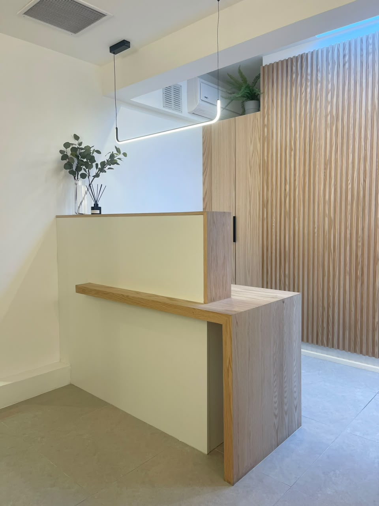
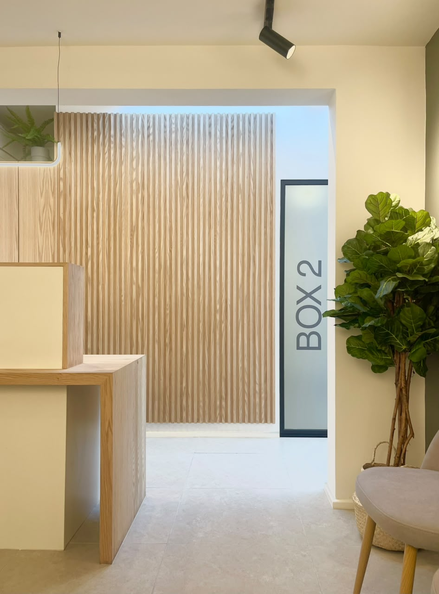
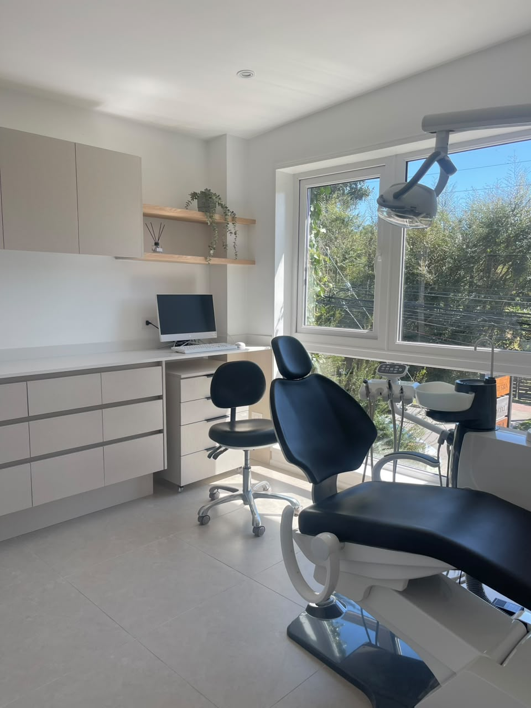
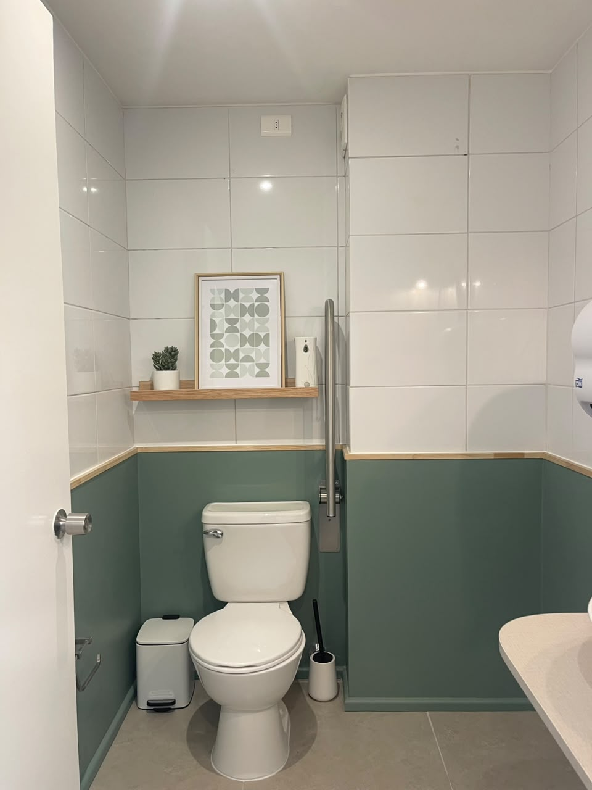
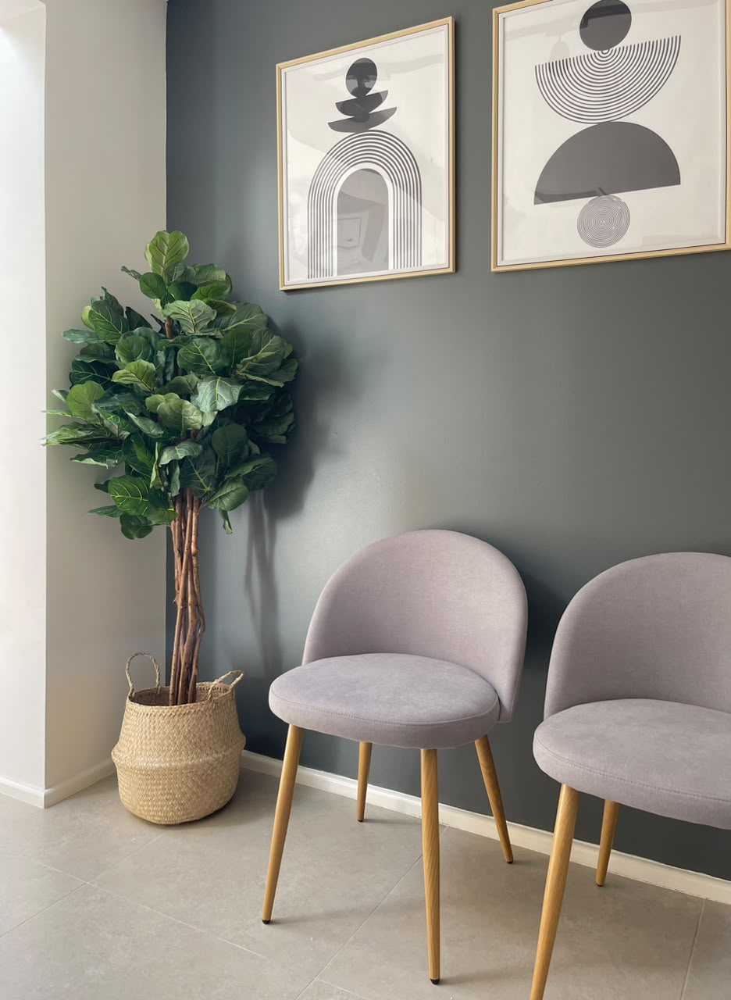
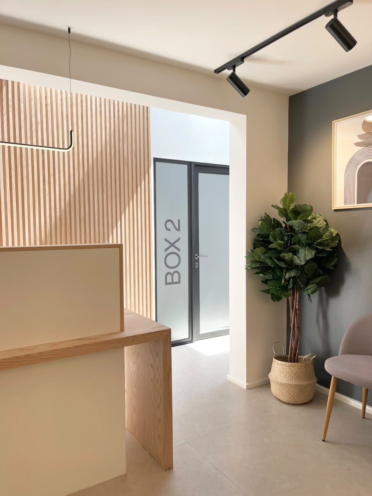
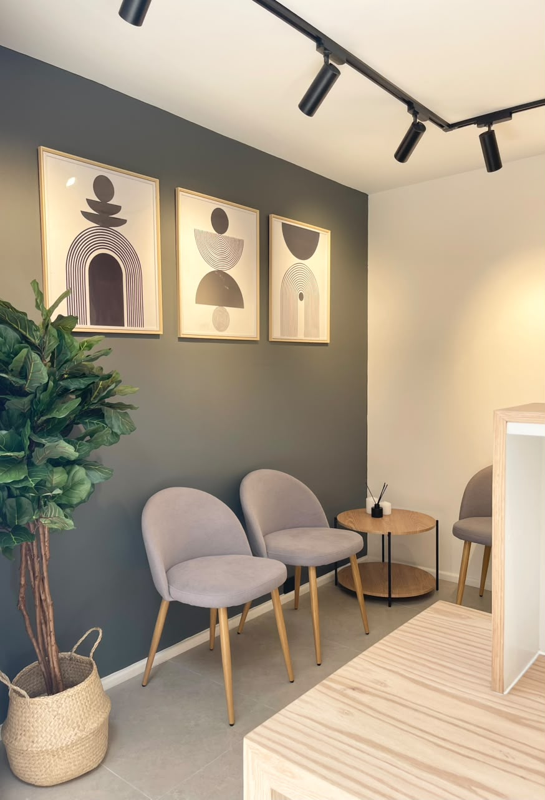
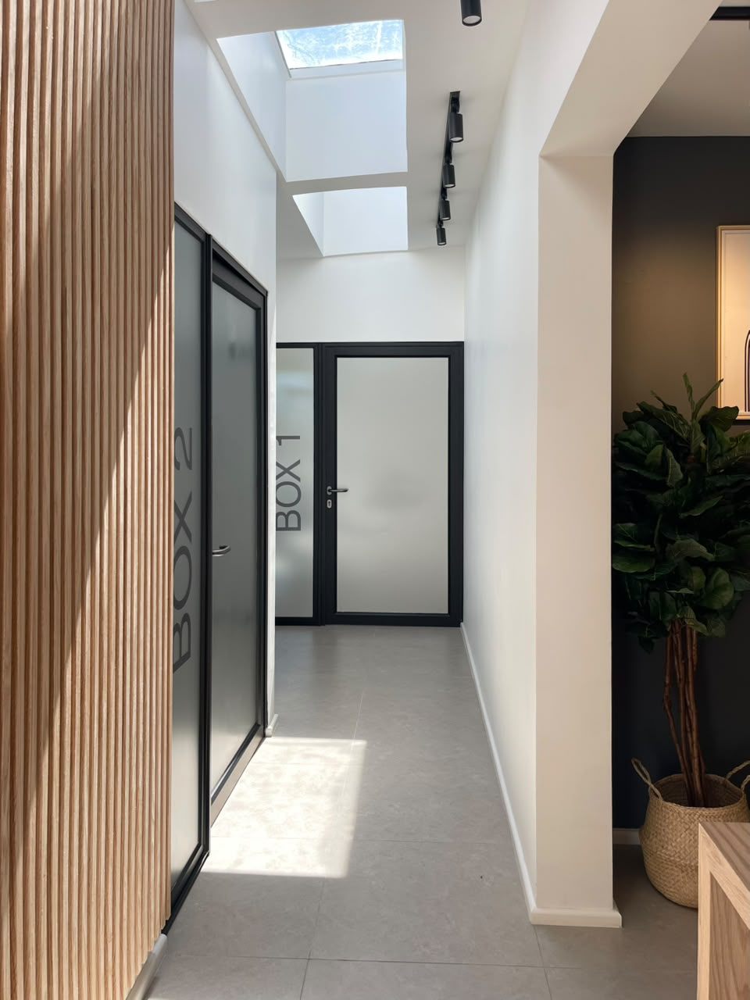
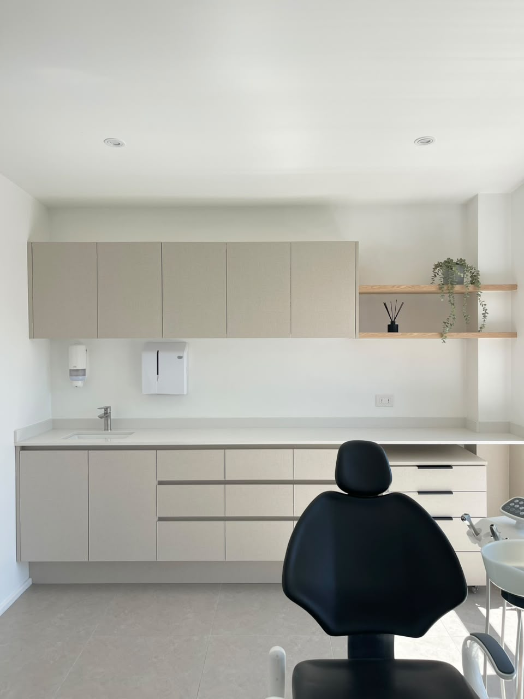
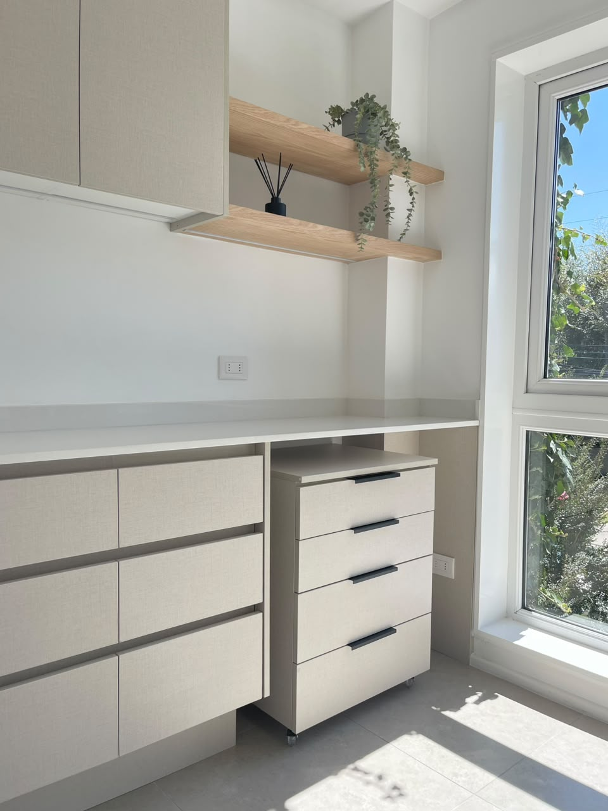

Clínica Virtus
Un proyecto de interiorismo que busca transmitir orden, cercanía y calma desde el primer punto de contacto.

El proyecto
Un espacio de bienvenida sereno y preciso.
La recepción articula maderas claras, superficies luminosas y líneas verticales para dar profundidad sin sobrecargar el espacio. La iluminación acompaña los recorridos y aporta una presencia cálida al conjunto.
La galería recoge el proyecto terminado. Se mantendrán fuera de la ficha los datos que el estudio no haya validado para publicación.









